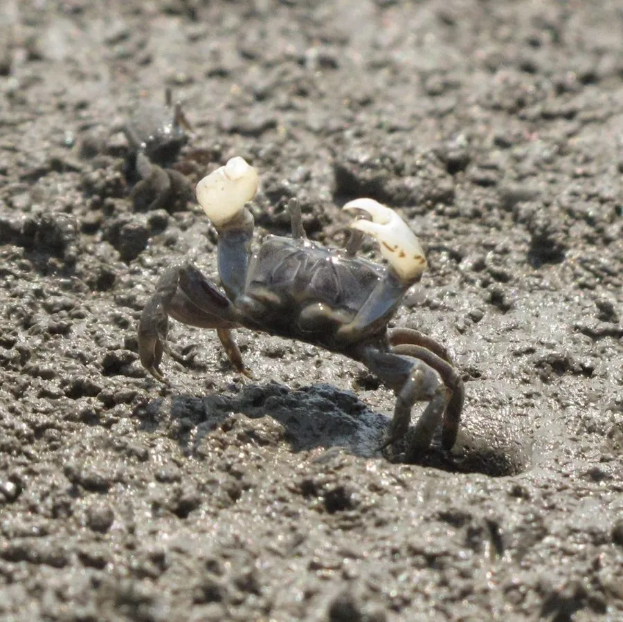

甲壳动物 · 动物界
谭氏泥蟹 Ilyoplax deschampsi

头胸甲近方形、螯足细小的小型泥蟹，栖于中国北方河口泥滩，取食泥表有机碎屑，洞口密布如蜂窝。
- 分类
- 门节肢动物门纲软甲纲目十足目科毛带蟹科属泥蟹属
- 栖息环境
- 河口潮间带上部泥滩与高盐沼泽
- 地理分布
- 中国渤海与黄海沿岸的河口泥滩
- 保护级别
- 常见种，无保护需求；对污染与围垦敏感
物种志
谭氏泥蟹的头胸甲宽仅一厘米左右，近方形，背甲灰褐至土黄，表面有细颗粒和短毛。螯足小而不对称，雄蟹的一侧螯较大。步足细长，末对足桨状。它体形极小，混在泥里几乎看不见，只有密布的洞口和细小的爬行痕迹暴露它的存在，退潮后泥滩上到处是它忙碌的身影。
它分布于中国渤海和黄海沿岸的河口泥滩，栖息在潮间带上部的高盐沼泽，洞口密集时地面像蜂窝。它以泥表有机碎屑和藻类为食，退潮后爬出洞口，用螯把泥送入口中筛食，涨潮前封洞。它是潮间带泥滩数量最多的动物之一，为迁徙水鸟提供食物，也在泥滩物质循环中起作用，对污染和围垦较为敏感。
形态与习性
- 甲宽仅约一厘米，近方形
- 背甲灰褐至土黄，有细颗粒与短毛
- 螯足细小而不对称，雄蟹一侧较大
- 食性泥表有机碎屑与藻类，筛泥取食
- 洞穴洞口密集如蜂窝
- 生态迁徙水鸟的食物，参与泥滩物质循环
趣味知识
- 它小得能站在一枚硬币上，却是整片泥滩上数量最多的居民之一。
- 退潮后它把泥一捧捧送进嘴里，筛出有机碎屑再把泥吐成小球。
- 泥滩上一片针尖大的洞口，就是成千上万只泥蟹的家门。